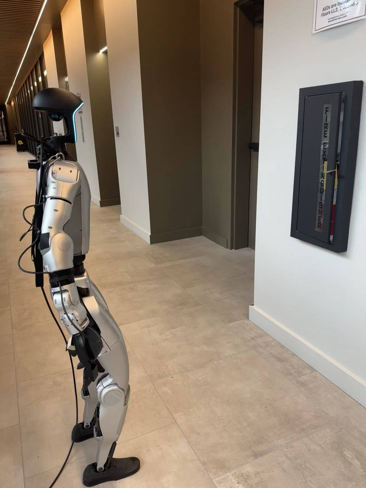

Humanoid Everyday · loco-manip-7__walk_to_fire_extinguisher_and_open_door
Walk to fire extinguisher and open door

Visual review action_review.json
{
"prompt_protocol": "humanoid_action_v1",
"prompt_provenance": "visually_authored_from_video_and_initial_frame",
"reviewed_contact_sheets": [
"sheet_001.jpg",
"sheet_002.jpg",
"sheet_003.jpg",
"sheet_004.jpg"
],
"inspected_frame_stride": 2,
"inspected_sampled_frame_count": 256,
"initial_scene": "Humanoid stands left of a recessed fire-extinguisher cabinet in a hallway. The cabinet door is already slightly ajar, exposing a narrow strip of the extinguisher. The robot is seen obliquely from behind, with a tether and external back support visible.",
"observed_sequence": [
{
"start_frame": 0,
"end_frame": 28,
"action": "Robot initially stands with both arms lowered; cabinet door slightly ajar.",
"confidence": "high"
},
{
"start_frame": 29,
"end_frame": 112,
"action": "Alternating leg steps move the body toward the cabinet; arms remain low with small walking movement.",
"confidence": "high"
},
{
"start_frame": 113,
"end_frame": 206,
"action": "Robot stops near the cabinet, maintaining a staggered bent-knee stance. Right arm starts preparing to reach; left arm stays lowered.",
"confidence": "high"
},
{
"start_frame": 207,
"end_frame": 278,
"action": "Right shoulder raises and elbow bends, bringing the right hand to the free/handle side of the cabinet door. Some fingertips and initial contact are near or beyond the right image boundary.",
"confidence": "high for reach; medium for exact contact"
},
{
"start_frame": 279,
"end_frame": 344,
"action": "Right hand remains engaged at the door with small positioning adjustments; left hand stays lowered without stabilizing the cabinet.",
"confidence": "medium"
},
{
"start_frame": 345,
"end_frame": 420,
"action": "Right arm draws inward, pulling the door outward about its left vertical hinge. Door swings open and reveals the red extinguisher still upright inside.",
"confidence": "high"
},
{
"start_frame": 421,
"end_frame": 480,
"action": "Right hand disengages and right arm extends away and lowers; door remains open.",
"confidence": "high"
},
{
"start_frame": 481,
"end_frame": 510,
"action": "Robot remains standing beside the open cabinet with lowered arms; extinguisher is not removed.",
"confidence": "high"
}
],
"arm_hand_roles": {
"right": "Near-camera arm connected to the right shoulder: reaches to door free/handle side, takes hold, pulls door outward, then releases and lowers.",
"left": "Far-side arm remains lowered throughout door manipulation. No support, transfer, or second-hand contact is visible.",
"coordination": "Single-hand door manipulation after walking into reach. Legs establish and retain a staggered stance while the right hand pulls; no bimanual manipulation or interaction with a person."
},
"anatomical_side_evidence": {
"convention": "Robot-relative anatomical sides, independent of image positions.",
"evidence": "Initial PNG and native frames 60/124 show external back support and tether behind the torso while the feet and body approach the cabinet. The active near-camera shoulder is on the right side of this rear-oblique torso view; its arm can be traced continuously from shoulder to wrist during reach and pull. The opposite shoulder/arm remains far-side and lowered.",
"confidence": "high",
"uncertainty": "No side label is printed on the robot; assignment is based on visible torso/back, shoulder attachment and forward body orientation."
},
"evidence_frame_indices": [
0,
60,
124,
228,
266,
304,
332,
346,
360,
376,
394,
410,
430,
456,
510
],
"source_initial_png_inspected": true,
"initial_png_native_resolution": [
1440,
1920
],
"terminal_state": "Cabinet door stays widely open, the red extinguisher remains upright inside, and the humanoid stands beside it with right hand disengaged and lowered; no extinguisher removal or door closing occurs.",
"selected_execution_status": "success",
"uncertainties": [
"Initial door-contact and exact finger/handle grip are partly occluded by the wrist or clipped at the right image boundary. The prompt therefore specifies taking hold of the door without inventing a detailed grip or latch operation."
],
"annotation_discrepancies": [],
"inspection_coverage": {
"source_frames_inclusive": [
0,
510
],
"contact_sheet_samples": 256,
"all_four_contact_sheets_visually_viewed": true,
"native_transition_and_terminal_frames_visually_viewed": [
60,
124,
228,
266,
304,
332,
346,
360,
376,
394,
410,
430,
456,
510
],
"initial_source_png_visually_viewed": true
},
"outcome_notes": "Opening is visibly achieved. Door begins slightly ajar and is pulled much wider open; no inference of unlatching from a closed state.",
"video_id": "loco-manip-7",
"dataset": "Humanoid_Everyday",
"dedicated_review_agent": "review_he_loco_manip_7",
"review_source_video": "Humanoid_Everyday/loco-manip-7__walk_to_fire_extinguisher_and_open_door/third_person/original/original.mp4",
"source_frame_count": 511,
"source_fps": 30.0,
"native_detail_frames": [
60,
124,
228,
266,
304,
332,
346,
360,
376,
394,
410,
430,
456,
510
],
"world_model_prompt": "The humanoid walks toward the fire extinguisher cabinet and stops within reach. With its right hand, it takes hold of the cabinet door and pulls it outward, swinging it open to expose the extinguisher. It releases the door and lowers its right arm, remaining beside the open cabinet with the extinguisher inside. Keep the camera fixed; preserve robot geometry, physically valid joint motion, and normal gripper opening and closing.",
"original_task_instruction": "Walking towards a fire extinguisher cabinet and opening its door, demonstrating navigation to emergency equipment and door manipulation.",
"selected_segment": {
"start_frame": 0,
"end_frame_exclusive": 511,
"reason": "Complete original single-task reference; no cropping or trimming requested."
},
"source_video_sha256": "3117fd5fa2cdf96831d48d41f28c50dbf54403e92b344eb8a0eee04e820650cc",
"review_completed_at": "2026-10-13T17:42:09.291514+00:00"
}